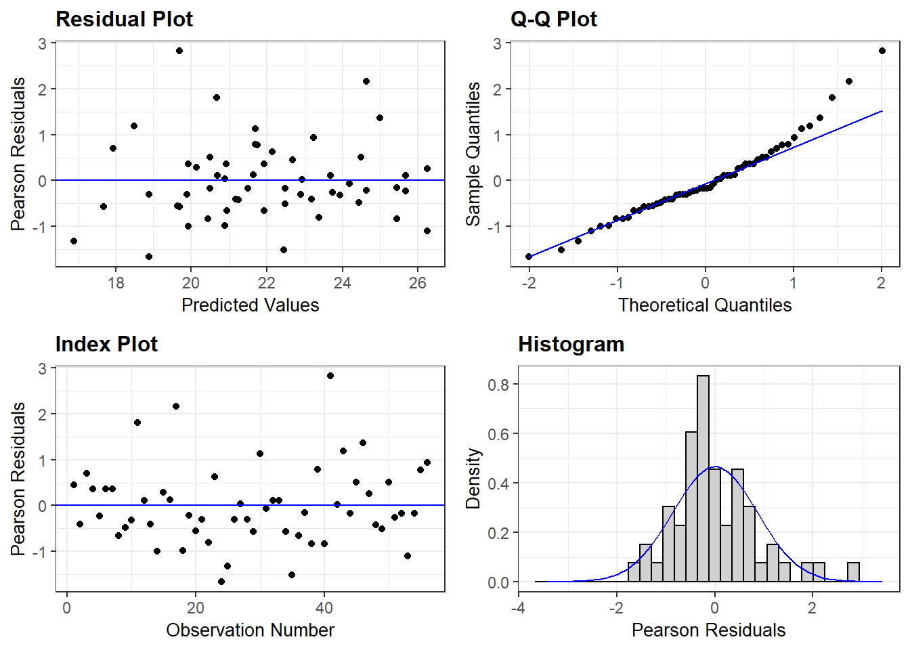
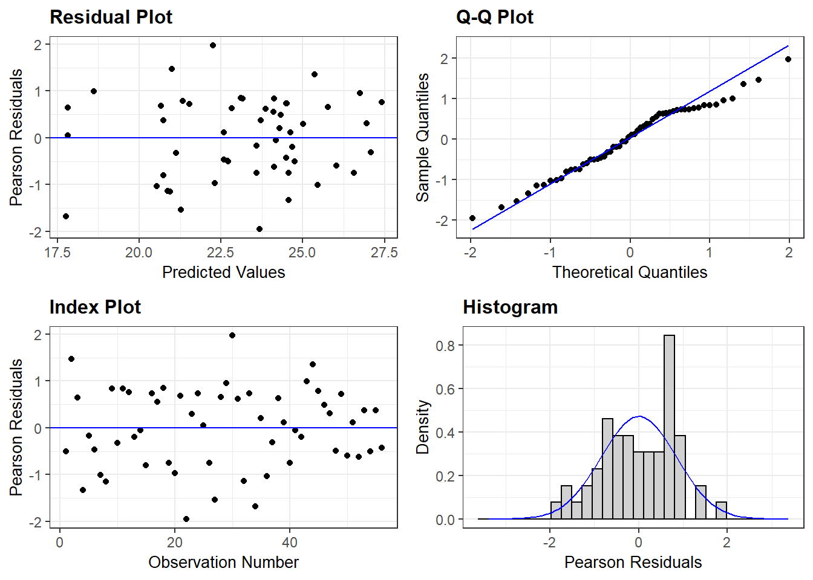
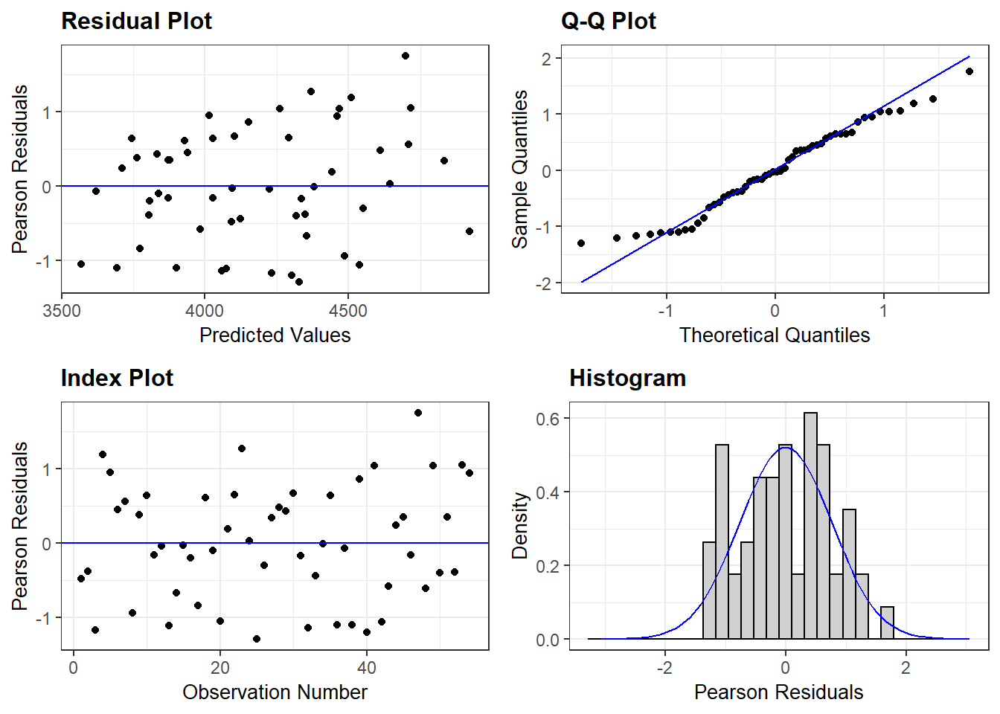
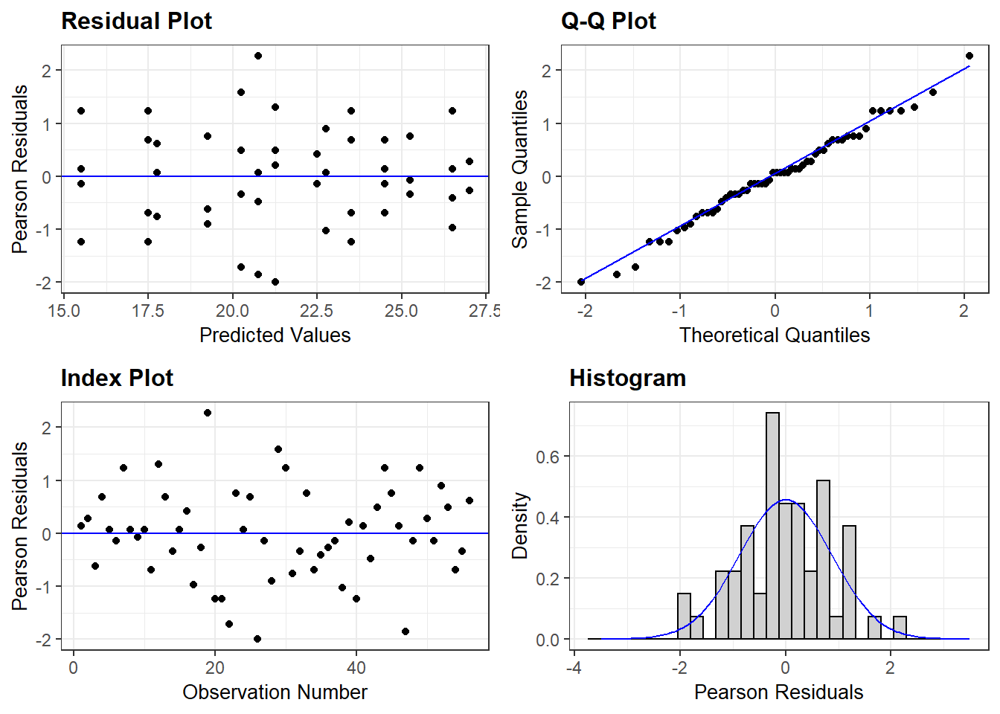
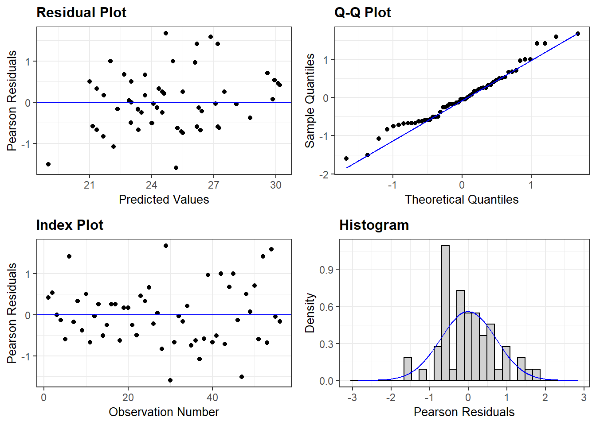
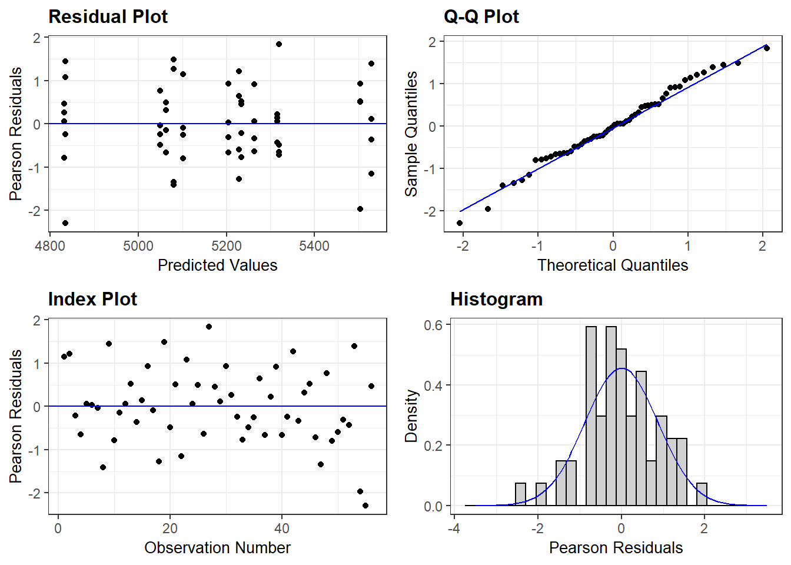
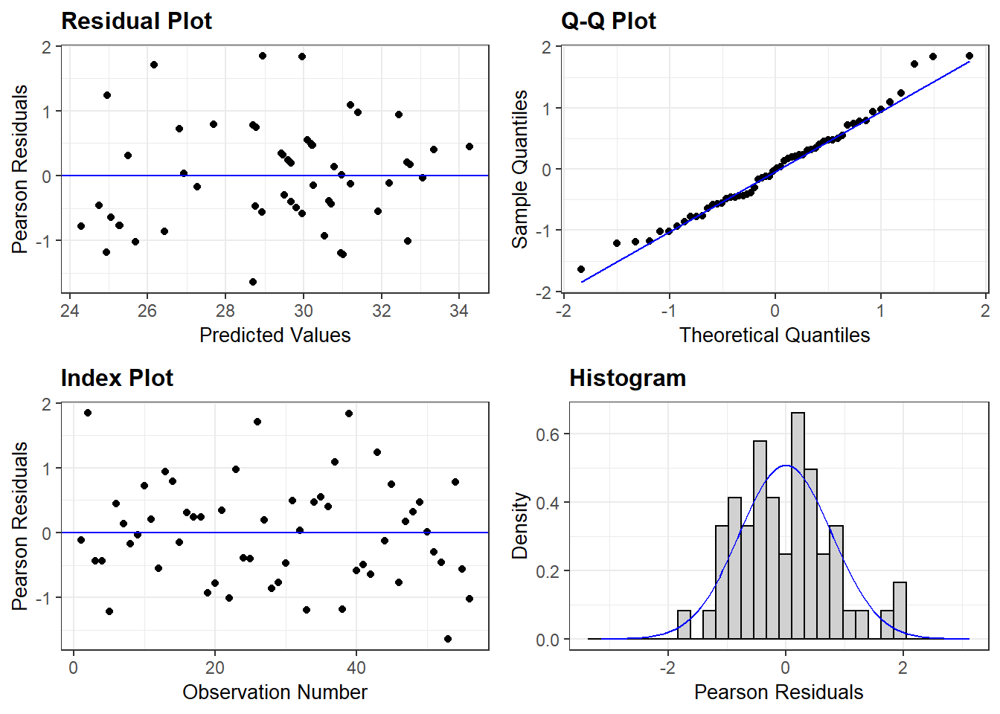
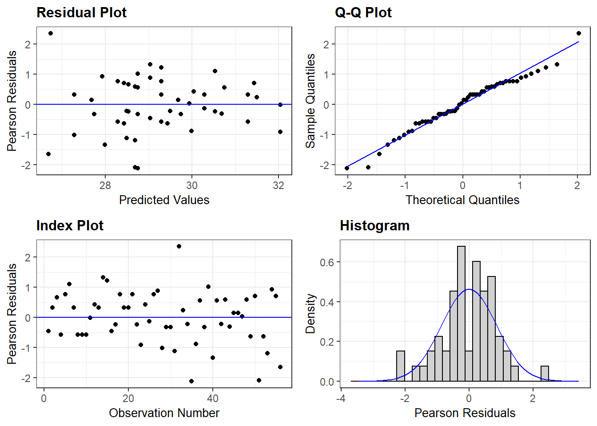
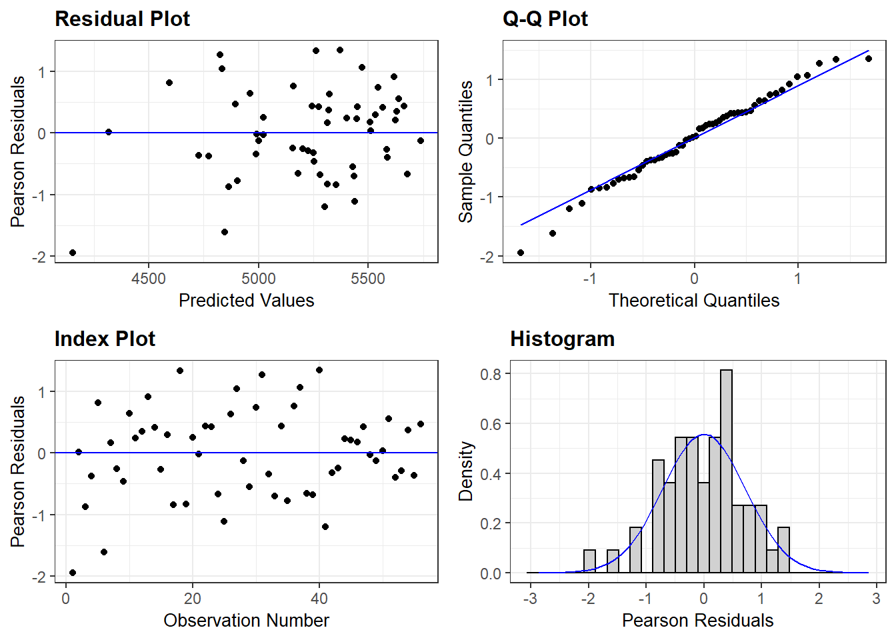

Seed treatment field trials analysis
Daniel Cerritos
12/11/2019
Last updated: 2020-04-13
Checks: 7 0
Knit directory: seedtreatments/
This reproducible R Markdown analysis was created with workflowr (version 1.6.1). The Checks tab describes the reproducibility checks that were applied when the results were created. The Past versions tab lists the development history.
Great! Since the R Markdown file has been committed to the Git repository, you know the exact version of the code that produced these results.
Great job! The global environment was empty. Objects defined in the global environment can affect the analysis in your R Markdown file in unknown ways. For reproduciblity it’s best to always run the code in an empty environment.
The command set.seed(20200402) was run prior to running the code in the R Markdown file. Setting a seed ensures that any results that rely on randomness, e.g. subsampling or permutations, are reproducible.
Great job! Recording the operating system, R version, and package versions is critical for reproducibility.
Nice! There were no cached chunks for this analysis, so you can be confident that you successfully produced the results during this run.
Great job! Using relative paths to the files within your workflowr project makes it easier to run your code on other machines.
Great! You are using Git for version control. Tracking code development and connecting the code version to the results is critical for reproducibility.
The results in this page were generated with repository version 6a70ba3. See the Past versions tab to see a history of the changes made to the R Markdown and HTML files.
Note that you need to be careful to ensure that all relevant files for the analysis have been committed to Git prior to generating the results (you can use wflow_publish or wflow_git_commit). workflowr only checks the R Markdown file, but you know if there are other scripts or data files that it depends on. Below is the status of the Git repository when the results were generated:
Ignored files:
Ignored: .Rproj.user/
Unstaged changes:
Deleted: analysis/figure/2019-12-11_analysis_seedtreatments.Rmd/layer test scores-1.png
Deleted: analysis/figure/2019-12-11_analysis_seedtreatments.Rmd/tray test lesion-1.png
Deleted: analysis/figure/2019-12-11_analysis_seedtreatments.Rmd/tray test lesion-2.png
Deleted: analysis/figure/2019-12-11_analysis_seedtreatments.Rmd/tray test lesion-3.png
Deleted: analysis/figure/2019-12-11_analysis_seedtreatments.Rmd/tray test lesion-4.png
Deleted: analysis/figure/2019-12-11_analysis_seedtreatments.Rmd/tray test lesion-5.png
Deleted: analysis/figure/2019-12-11_analysis_seedtreatments.Rmd/tray test lesion-6.png
Note that any generated files, e.g. HTML, png, CSS, etc., are not included in this status report because it is ok for generated content to have uncommitted changes.
These are the previous versions of the repository in which changes were made to the R Markdown (analysis/05_field-trials_analysis.Rmd) and HTML (docs/05_field-trials_analysis.html) files. If you’ve configured a remote Git repository (see ?wflow_git_remote), click on the hyperlinks in the table below to view the files as they were in that past version.
| File | Version | Author | Date | Message |
|---|---|---|---|---|
| Rmd | 6a70ba3 | Daniel Guillermo Cerritos | 2020-04-13 | Publish the initial files for myproject |
| Rmd | d40b0be | Daniel Guillermo Cerritos | 2020-04-13 | figure 3B |
| Rmd | d556457 | Daniel Guillermo Cerritos | 2020-04-13 | fig 1 |
| Rmd | ee62354 | Daniel Guillermo Cerritos | 2020-04-12 | start urbana |
| Rmd | a605c0c | Daniel Guillermo Cerritos | 2020-04-12 | finish orr |
| Rmd | daeb250 | Daniel Guillermo Cerritos | 2020-04-12 | finish monmouth |
| Rmd | 467706f | Daniel Guillermo Cerritos | 2020-04-12 | contrast function |
| Rmd | 35cb4e1 | Daniel Guillermo Cerritos | 2020-04-12 | plots for emmeans |
| Rmd | c253585 | Daniel Guillermo Cerritos | 2020-04-06 | rename again |
library(tidyverse)
library(here)
library(lme4)
library(lmerTest)
library(emmeans)
library(multcompView)
library(broom)
library(cowplot)
library(ggResidpanel)
library(ggsignif)
theme_set(theme_bw())Import data files
(seed.treatments.data <- list.files(path = here("output", "transform_data"),
full.names = TRUE))[1] "C:/Users/danie/Documents/masters_projects/seedtreatments/output/transform_data/03_field-trials_iowa-2018_transformed-data.csv"
[2] "C:/Users/danie/Documents/masters_projects/seedtreatments/output/transform_data/03_field-trials_multilocation-2017_transformed-data.csv"
[3] "C:/Users/danie/Documents/masters_projects/seedtreatments/output/transform_data/03_field-trials_urbana-2018_transformed-data.csv" illinois.2017 <- read.csv(seed.treatments.data[[2]])
urbana.2018 <- read.csv(seed.treatments.data[[3]])
iowa <- read.csv(seed.treatments.data[[1]])Multilocation field trials 2017
Multilocation Analysis
Fit mixed model for 2017 field trials
illinois.2017$block <- as.factor(illinois.2017$block) # set block as factor
fm.illinois.vc <- lmer(vc_plants.m2 ~ location * variety * treatment + (1|block:location) + (1|whole_plot),
data = illinois.2017)
anova(fm.illinois.vc) Type III Analysis of Variance Table with Satterthwaite’s method Sum Sq Mean Sq NumDF DenDF F value Pr(>F) location 1074.33 537.17 2 8.999 64.2178 4.710e-06 variety 313.09 52.18 6 54.061 6.2384 5.028e-05 treatment 366.10 366.10 1 63.064 43.7664 9.265e-09 location:variety 284.71 23.73 12 54.061 2.8364 0.004373 location:treatment 15.51 7.76 2 63.064 0.9272 0.400979 variety:treatment 80.15 13.36 6 63.064 1.5971 0.162780 location:variety:treatment 132.24 11.02 12 63.064 1.3174 0.231470
location variety treatment * location:variety location:treatment
variety:treatment
location:variety:treatment
— Signif. codes: 0 ‘’ 0.001 ’’ 0.01 ’’ 0.05 ‘.’ 0.1 ’ ’ 1
emmeans(fm.illinois.vc, ~ treatment) %>%
plot(comparisons = TRUE) # increase of 12.88%
Bars are confidence intervals and arrows are for comparisons. Arrows that overlap are not significant different.
fm.illinois.v2 <- lmer(v2_plants.m2 ~ location*variety*treatment + (1|block:location) + (1|whole_plot),
data = illinois.2017)
anova(fm.illinois.v2)Type III Analysis of Variance Table with Satterthwaite's method
Sum Sq Mean Sq NumDF DenDF F value Pr(>F)
location 787.33 393.66 2 63 54.3134 1.949e-14
variety 121.82 20.30 6 63 2.8012 0.01765
treatment 174.05 174.05 1 63 24.0139 7.018e-06
location:variety 83.39 6.95 12 63 0.9588 0.49664
location:treatment 38.82 19.41 2 63 2.6781 0.07651
variety:treatment 19.57 3.26 6 63 0.4500 0.84228
location:variety:treatment 113.43 9.45 12 63 1.3041 0.23885
location ***
variety *
treatment ***
location:variety
location:treatment .
variety:treatment
location:variety:treatment
---
Signif. codes: 0 '***' 0.001 '**' 0.01 '*' 0.05 '.' 0.1 ' ' 1emmeans(fm.illinois.v2, pairwise ~ treatment) %>%
plot(comparisons = TRUE) # increase of 8.22%
fm.illinois.yield <- lmer(yield_kg.ha ~ location * variety * treatment + (1|block:location) + (1|whole_plot),
data = illinois.2017)
anova(fm.illinois.yield) Type III Analysis of Variance Table with Satterthwaite's method
Sum Sq Mean Sq NumDF DenDF F value
location 13335298 6667649 2 9.072 101.3837
variety 3462357 577060 6 54.400 8.7744
treatment 31334 31334 1 62.853 0.4764
location:variety 3364681 280390 12 54.352 4.2634
location:treatment 9975 4988 2 62.829 0.0758
variety:treatment 597361 99560 6 62.799 1.5138
location:variety:treatment 626889 52241 12 62.736 0.7943
Pr(>F)
location 6.213e-07 ***
variety 1.081e-06 ***
treatment 0.4925782
location:variety 0.0001004 ***
location:treatment 0.9270503
variety:treatment 0.1882714
location:variety:treatment 0.6544569
---
Signif. codes: 0 '***' 0.001 '**' 0.01 '*' 0.05 '.' 0.1 ' ' 1emmeans(fm.illinois.yield, pairwise ~ treatment) %>%
plot(comparisons = TRUE)
The seed treatment significantly increased early stands (VC and V2), but no effect was
observed for yield.
Analysis by location
Location and location by variety were significant for all varibles. An analysis by
location would be perform to see if specific varieties perform better in a
particular environment.
# change whole_plot column by removing location nested in block
whole.plot <- function(data){
data %>%
mutate(whole_plot = paste(block, variety, sep = ":"))
}
monmouth <- illinois.2017 %>%
filter(location == "Monmouth") %>%
whole.plot()
orr <- illinois.2017 %>%
filter(location == "Orr") %>%
whole.plot()
urbana <- illinois.2017 %>%
filter(location == "Urbana") %>%
whole.plot()Monmouth
fm.mon.vc <- lmer(vc_plants.m2 ~ variety*treatment + (1|block) + (1|whole_plot),
data = monmouth)
fm.mon.v2 <- lmer(v2_plants.m2 ~ variety*treatment + (1|block) + (1|whole_plot),
data = monmouth)
fm.mon.yield <- lmer(yield_kg.ha ~ variety*treatment + (1|block) + (1|whole_plot),
data = monmouth)
anova(fm.mon.vc) Type III Analysis of Variance Table with Satterthwaite's method
Sum Sq Mean Sq NumDF DenDF F value Pr(>F)
variety 137.679 22.946 6 39 2.6561 0.029451 *
treatment 64.286 64.286 1 39 7.4412 0.009508 **
variety:treatment 65.964 10.994 6 39 1.2726 0.292296
---
Signif. codes: 0 '***' 0.001 '**' 0.01 '*' 0.05 '.' 0.1 ' ' 1anova(fm.mon.v2)Type III Analysis of Variance Table with Satterthwaite's method
Sum Sq Mean Sq NumDF DenDF F value Pr(>F)
variety 62.032 10.339 6 21 0.8821 0.524949
treatment 161.161 161.161 1 21 13.7507 0.001303 **
variety:treatment 55.214 9.202 6 21 0.7852 0.591196
---
Signif. codes: 0 '***' 0.001 '**' 0.01 '*' 0.05 '.' 0.1 ' ' 1anova(fm.mon.yield) Type III Analysis of Variance Table with Satterthwaite's method
Sum Sq Mean Sq NumDF DenDF F value Pr(>F)
variety 2662208 443701 6 18.401 4.3202 0.006891 **
treatment 410 410 1 20.847 0.0040 0.950224
variety:treatment 606566 101094 6 20.722 0.9843 0.460840
---
Signif. codes: 0 '***' 0.001 '**' 0.01 '*' 0.05 '.' 0.1 ' ' 1Treatment comparisons
I will focus in VC because both treatment and variety were significant.
emmeans(fm.mon.vc, ~ treatment|variety) %>%
plot(comparisons =TRUE) 
LD11-10069 (Rps1c, moderate) is the only variety with significant differences
between control and treatment.
Yield comparisons
No effect of seed treatment on yield so I would only compare yield between
varieties.
emmeans(fm.mon.yield, ~ variety) %>%
cld.emmGrid() variety emmean SE df lower.CL upper.CL .group
LD12-15156R1a 3811 162 22.7 3476 4146 1
LD11-7311 3854 162 22.7 3519 4189 1
LD11-10069 3893 152 19.7 3576 4210 1
LD13-14071R2 4284 152 19.7 3967 4601 12
LD07-3395bf 4321 152 19.7 4004 4638 12
LD11-13802R2 4368 152 19.7 4052 4685 12
LD10-10219 4642 152 19.7 4325 4959 2
Results are averaged over the levels of: treatment
Degrees-of-freedom method: kenward-roger
Confidence level used: 0.95
P value adjustment: tukey method for comparing a family of 7 estimates
significance level used: alpha = 0.05 Varieties with Rps don’t seem to perform better than varieties with no
gene (rps). High to moderate levels have higher yields than low level.
Contrasts
I will group varieties by gene and by levels of partial resistance.
Then do some contrasts betweem the seed treatment and control
to see the overrall effect of the seed treatment by type of resistance.
m.mon.vc <- emmeans(fm.mon.vc, ~ variety:treatment)
m.mon.yield <- emmeans(fm.mon.yield, ~ variety:treatment)custom_contrasts <- function(lsmeans){
# by Rps
cons.1 <- list(
"t.rps - c.rps" = c(-0.5, -0.5, rep(0, 5), 0.5, 0.5, rep(0, 5)),
"t.Rps1c - c.Rps1c" = c(0, 0, -1/3, 0, 0, -1/3, -1/3, 0, 0, 1/3, 0, 0, 1/3, 1/3),
"t.Rps1k - c.Rps1k" = c(rep(0, 3), -0.5, -0.5, rep(0, 5), 0.5, 0.5, 0, 0))
# by partial resistance level
cons.2 <- list(
"t.High - c.High" = c(-0.5, rep(0, 5), -0.5, 0.5, rep(0, 5), 0.5),
"t.Moderate - c.Moderate" = c(0, rep(-0.25, 4), rep(0, 3), rep(0.25, 4), 0, 0),
"t.Low - c.Low" = c(rep(0, 5), -1, rep(0, 6), 1, 0)
)
cus.con1 <- contrast(lsmeans, cons.1, adjust = "mvt") # adjustment for mutiple testing
cus.con2 <- contrast(lsmeans, cons.2, adjust = "mvt")
l <- c(cus.con1, cus.con2)
l.m <- map(l, summary, infer = TRUE) # confidence intervals
df_1 <- as.data.frame(l.m[[1]])
df_2 <- as.data.frame(l.m[[2]])
df_all <- rbind(df_1, df_2)
df_all
}Keep focusing only in stand VC and yield.
custom_contrasts(m.mon.vc) contrast estimate SE df lower.CL upper.CL
1 t.rps - c.rps -0.250 1.469625 21 -4.0478599 3.547860
2 t.Rps1c - c.Rps1c 4.000 1.199944 21 0.8990604 7.100940
3 t.Rps1k - c.Rps1k 1.750 1.469625 21 -2.0478599 5.547860
4 t.High - c.High 2.375 1.469625 21 -1.4198184 6.169818
5 t.Moderate - c.Moderate 1.625 1.039182 21 -1.0583419 4.308342
6 t.Low - c.Low 3.750 2.078364 21 -1.6166837 9.116684
t.ratio p.value
1 -0.1701114 0.997456422
2 3.3334884 0.009228371
3 1.1907796 0.561224365
4 1.6160580 0.312093394
5 1.5637297 0.338625932
6 1.8043035 0.228737128custom_contrasts(m.mon.yield) contrast estimate SE df lower.CL upper.CL
1 t.rps - c.rps -17.100000 160.2380 19.24754 -434.6116 400.4116
2 t.Rps1c - c.Rps1c 22.668751 136.1238 20.21208 -330.5229 375.8604
3 t.Rps1k - c.Rps1k 2.605047 169.8637 20.66346 -437.7106 442.9207
4 t.High - c.High -53.512500 160.2380 19.24754 -471.0494 364.0244
5 t.Moderate - c.Moderate 18.233774 116.7582 19.97885 -284.9371 321.4046
6 t.Low - c.Low 73.106252 253.1052 21.90538 -578.0090 724.2215
t.ratio p.value
1 -0.10671628 0.9993632
2 0.16653046 0.9976056
3 0.01533611 0.9999981
4 -0.33395643 0.9815531
5 0.15616702 0.9980217
6 0.28883739 0.9879318Significant differences for Rps1c at VC, no differences for levels of partial resistance (PR).
At yield, differences for Rps1k and no differences for PR levels.
I would do another contrast comparing yields between levels of PR. Rps
didn’t seem to perform better than rps, but high PR seem to perform better.
pr_contrast <- function(lsmean){
cons.3 <- list(
"High - Low" = c(0.5, 0, 0, 0, 0, -1, 0.5),
"High - Moderate" = c(0.5, -0.25, -0.25, -0.25, -0.25, 0, 0.5),
"Moderate - Low" = c(0, 0.25, 0.25, 0.25, 0.25, -1, 0)
)
cus.con.3 <- contrast(lsmean, cons.3, adjust = "mvt")
conf_con <- summary(cus.con.3, infer = TRUE)
df_con <- as.data.frame(conf_con)
df_con
}
emmeans(fm.mon.yield, ~ variety) %>%
pr_contrast() contrast estimate SE df lower.CL upper.CL
1 High - Low 491.0969 191.2908 18.82481 7.843842 974.3499
2 High - Moderate 113.1606 130.0229 17.16800 -218.617256 444.9385
3 Moderate - Low 377.9362 176.7774 19.36507 -68.412306 824.2848
t.ratio p.value
1 2.5672791 0.04617057
2 0.8703133 0.66083792
3 2.1379211 0.10588855Orr
fm.orr.vc <- lmer(vc_plants.m2 ~ variety*treatment + (1|block) + (1|whole_plot),
data = orr)
fm.orr.v2 <- lmer(v2_plants.m2 ~ variety*treatment + (1|block) + (1|whole_plot),
data = orr)
fm.orr.yield <- lmer(yield_kg.ha ~ variety*treatment + (1|block) + (1|whole_plot),
data = orr)
anova(fm.orr.vc) Type III Analysis of Variance Table with Satterthwaite's method
Sum Sq Mean Sq NumDF DenDF F value Pr(>F)
variety 357.11 59.518 6 42 4.5183 0.0012853 **
treatment 182.16 182.161 1 42 13.8287 0.0005873 ***
variety:treatment 90.46 15.077 6 42 1.1446 0.3539170
---
Signif. codes: 0 '***' 0.001 '**' 0.01 '*' 0.05 '.' 0.1 ' ' 1anova(fm.orr.v2) Type III Analysis of Variance Table with Satterthwaite's method
Sum Sq Mean Sq NumDF DenDF F value Pr(>F)
variety 55.135 9.1892 6 20.998 2.3252 0.07040 .
treatment 23.143 23.1428 1 21.001 5.8560 0.02468 *
variety:treatment 71.857 11.9762 6 21.001 3.0304 0.02702 *
---
Signif. codes: 0 '***' 0.001 '**' 0.01 '*' 0.05 '.' 0.1 ' ' 1anova(fm.orr.yield) Type III Analysis of Variance Table with Satterthwaite's method
Sum Sq Mean Sq NumDF DenDF F value Pr(>F)
variety 2101827 350305 6 42 8.2043 6.709e-06 ***
treatment 27444 27444 1 42 0.6427 0.4272
variety:treatment 127857 21310 6 42 0.4991 0.8054
---
Signif. codes: 0 '***' 0.001 '**' 0.01 '*' 0.05 '.' 0.1 ' ' 1Treatment comparison
emmeans(fm.orr.vc, ~ treatment|variety) %>%
plot(comparisons =TRUE) 
Only one variety (LD12-15156R1a) had a significant difference between seed treatment and control.
Yield comparison
emmeans(fm.orr.yield, ~ variety) %>%
cld.emmGrid() variety emmean SE df lower.CL upper.CL .group
LD12-15156R1a 4833 73.1 21 4681 4985 1
LD11-13802R2 5065 73.1 21 4913 5217 12
LD10-10219 5163 73.1 21 5011 5315 12
LD11-10069 5165 73.1 21 5013 5317 12
LD13-14071R2 5260 73.1 21 5108 5412 23
LD11-7311 5276 73.1 21 5124 5428 23
LD07-3395bf 5516 73.1 21 5364 5668 3
Results are averaged over the levels of: treatment
Degrees-of-freedom method: kenward-roger
Confidence level used: 0.95
P value adjustment: tukey method for comparing a family of 7 estimates
significance level used: alpha = 0.05 Same as Monmouth, variety with no resistance gene has the higher yield.
Contrasts
emmeans(fm.orr.vc, ~ variety:treatment) %>%
custom_contrasts() contrast estimate SE df lower.CL upper.CL
1 t.rps - c.rps 3.500000 1.814705 21 -1.1883805 8.188380
2 t.Rps1c - c.Rps1c 2.583333 1.481701 21 -1.2447133 6.411380
3 t.Rps1k - c.Rps1k 5.250000 1.814705 21 0.5616195 9.938380
4 t.High - c.High 1.500000 1.814705 21 -3.1909286 6.190929
5 t.Moderate - c.Moderate 3.687500 1.283190 21 0.3705126 7.004487
6 t.Low - c.Low 7.500000 2.566381 21 0.8660251 14.133975
t.ratio p.value
1 1.9286880 0.18377153
2 1.7434922 0.25365797
3 2.8930320 0.02538152
4 0.8265806 0.79367036
5 2.8736969 0.02650170
6 2.9224036 0.02386504emmeans(fm.orr.yield, ~ variety:treatment) %>%
custom_contrasts() contrast estimate SE df lower.CL upper.CL
1 t.rps - c.rps 87.8250 103.31699 21 -179.01875 354.6688
2 t.Rps1c - c.Rps1c 6.2500 84.35797 21 -211.62701 224.1270
3 t.Rps1k - c.Rps1k 57.7625 103.31699 21 -209.08125 324.6063
4 t.High - c.High -68.3250 103.31699 21 -335.61431 198.9643
5 t.Moderate - c.Moderate 110.7063 73.05614 21 -78.29584 299.7083
6 t.Low - c.Low 3.7500 146.11228 21 -374.25417 381.7542
t.ratio p.value
1 0.85005383 0.7798819
2 0.07408903 0.9997868
3 0.55908038 0.9226490
4 -0.66131429 0.8802944
5 1.51535856 0.3642599
6 0.02566519 0.9999911Rps1k had a significant difference at VC and differences for moderate and low.
No significant differences for yield.
emmeans(fm.orr.yield, ~ variety) %>%
pr_contrast() contrast estimate SE df lower.CL upper.CL t.ratio
1 High - Low 554.9250 89.47514 18 327.71387 782.1361 6.202002
2 High - Moderate 221.0344 63.26848 18 60.37185 381.6969 3.493594
3 Moderate - Low 333.8906 81.67925 18 126.47619 541.3051 4.087827
p.value
1 1.827182e-05
2 6.677541e-03
3 2.051554e-03High PR has higher yields than both moderate and low.
Urbana
fm.urb.vc <- lmer(vc_plants.m2 ~ variety*treatment + (1|block) + (1|whole_plot),
data = urbana)
fm.urb.v2 <- lmer(v2_plants.m2 ~ variety*treatment + (1|block) + (1|whole_plot),
data = urbana)
fm.urb.r8 <- lmer(r8_plants.m2 ~ variety*treatment + (1|block) + (1|whole_plot),
data = urbana)
fm.urb.yield <- lmer(yield_kg.ha ~ variety*treatment + (1|block) + (1|whole_plot),
data = urbana)
anova(fm.urb.vc)Type III Analysis of Variance Table with Satterthwaite's method
Sum Sq Mean Sq NumDF DenDF F value Pr(>F)
variety 76.966 12.828 6 18 4.6951 0.004836 **
treatment 135.161 135.161 1 21 49.4704 6.082e-07 ***
variety:treatment 55.964 9.327 6 21 3.4139 0.016438 *
---
Signif. codes: 0 '***' 0.001 '**' 0.01 '*' 0.05 '.' 0.1 ' ' 1anova(fm.urb.v2)Type III Analysis of Variance Table with Satterthwaite's method
Sum Sq Mean Sq NumDF DenDF F value Pr(>F)
variety 43.500 7.2500 6 39.001 1.4532 0.21970
treatment 28.571 28.5714 1 39.001 5.7270 0.02162 *
variety:treatment 5.929 0.9881 6 39.001 0.1981 0.97540
---
Signif. codes: 0 '***' 0.001 '**' 0.01 '*' 0.05 '.' 0.1 ' ' 1anova(fm.urb.r8) Type III Analysis of Variance Table with Satterthwaite's method
Sum Sq Mean Sq NumDF DenDF F value Pr(>F)
variety 56.505 9.418 6 21.001 2.5686 0.050281 .
treatment 52.071 52.071 1 21.004 14.2023 0.001128 **
variety:treatment 33.929 5.655 6 21.004 1.5423 0.213290
---
Signif. codes: 0 '***' 0.001 '**' 0.01 '*' 0.05 '.' 0.1 ' ' 1anova(fm.urb.yield) Type III Analysis of Variance Table with Satterthwaite's method
Sum Sq Mean Sq NumDF DenDF F value Pr(>F)
variety 1623576 270596 6 18 6.3659 0.0009905 ***
treatment 14237 14237 1 21 0.3349 0.5689267
variety:treatment 489030 81505 6 21 1.9174 0.1250455
---
Signif. codes: 0 '***' 0.001 '**' 0.01 '*' 0.05 '.' 0.1 ' ' 1A significant interaction was observed for VC in Urbana.
emmip(fm.urb.vc, treatment ~ variety)
Seems that seed treatment is having an effect in both rps and Rps1k.
Treatment comparison
emmeans(fm.urb.vc, ~ treatment|variety) %>%
plot(comparisons =TRUE) 
No significant difference for two of the the three Rps1c varieties.
Yield comparison
emmeans(fm.urb.vc, ~ variety) %>%
cld.emmGrid() variety emmean SE df lower.CL upper.CL .group
LD11-7311 27.8 0.866 12.5 25.9 29.6 1
LD07-3395bf 28.1 0.866 12.5 26.2 30.0 12
LD11-13802R2 28.4 0.866 12.5 26.5 30.3 123
LD12-15156R1a 28.6 0.866 12.5 26.7 30.5 123
LD13-14071R2 29.8 0.866 12.5 27.9 31.6 123
LD11-10069 31.1 0.866 12.5 29.2 33.0 23
LD10-10219 31.6 0.866 12.5 29.7 33.5 3
Results are averaged over the levels of: treatment
Degrees-of-freedom method: kenward-roger
Confidence level used: 0.95
P value adjustment: tukey method for comparing a family of 7 estimates
significance level used: alpha = 0.05 A Rps1c variety has the highest yield.
Contrasts
emmeans(fm.urb.vc, ~ variety:treatment) %>%
custom_contrasts contrast estimate SE df lower.CL upper.CL
1 t.rps - c.rps 4.000000 0.8264617 21 1.8644558 6.135544
2 t.Rps1c - c.Rps1c 1.333333 0.6748032 21 -0.4103312 3.076998
3 t.Rps1k - c.Rps1k 4.875000 0.8264617 21 2.7394558 7.010544
4 t.High - c.High 2.375000 0.8264617 21 0.2397845 4.510216
5 t.Moderate - c.Moderate 3.437500 0.5843967 21 1.9276746 4.947325
6 t.Low - c.Low 3.250000 1.1687934 21 0.2303492 6.269651
t.ratio p.value
1 4.839910 2.514842e-04
2 1.975885 1.684695e-01
3 5.898640 1.925441e-05
4 2.873696 2.646309e-02
5 5.882135 2.201956e-05
6 2.780645 3.267593e-02emmeans(fm.urb.yield, ~ variety:treatment) %>%
custom_contrasts() contrast estimate SE df lower.CL upper.CL
1 t.rps - c.rps 151.6000 103.08662 21 -114.52884 417.72884
2 t.Rps1c - c.Rps1c -161.7667 84.16988 21 -379.05995 55.52662
3 t.Rps1k - c.Rps1k 202.6625 103.08662 21 -63.46634 468.79134
4 t.High - c.High -20.7000 103.08662 21 -287.26185 245.86185
5 t.Moderate - c.Moderate 107.5813 72.89325 21 -80.90644 296.06894
6 t.Low - c.Low -165.7000 145.78650 21 -542.67538 211.27538
t.ratio p.value
1 1.470608 0.3890769
2 -1.921907 0.1860190
3 1.965944 0.1716813
4 -0.200802 0.9958421
5 1.475874 0.3860478
6 -1.136594 0.5968085Significant differences for rps and Rps1k for VC and for all pr levels at VC.
No significant differences for yield
emmeans(fm.urb.yield, ~ variety) %>%
pr_contrast() contrast estimate SE df lower.CL upper.CL t.ratio
1 High - Low 627.61250 145.8816 18 257.1406 998.0844 4.3022038
2 High - Moderate 41.74062 103.1539 18 -220.2226 303.7038 0.4046442
3 Moderate - Low 585.87187 133.1711 18 247.6789 924.0649 4.3993920
p.value
1 0.0011163307
2 0.9127581058
3 0.0008952324Model assumptions
# diagnostic plots to check on model assumptions
models.2017 <- list(fm.mon.vc, fm.mon.v2, fm.mon.yield,
fm.orr.vc, fm.orr.v2, fm.orr.yield,
fm.urb.vc, fm.urb.v2, fm.urb.yield)
map(models.2017, resid_panel) #residuals normally distributed and homogenicity of variance
Figure 1

Figure 2

Urbana and Boone field trials in 2018
Urbana 2018
urbana.2018$block <- as.factor(urbana.2018$block)
fm.urb18.vc <- lmer(vc_plants.m2 ~ variety*treatment + (1|block) + (1|whole_plot),
data = urbana.2018)
fm.urb18.v2 <- lmer(v2_plants.m2 ~ variety*treatment + (1|block) + (1|whole_plot),
data = urbana.2018)
fm.urb18.v4 <- lmer(v4_plants.m2 ~ variety*treatment + (1|block) + (1|whole_plot),
data = urbana.2018)
fm.urb18.r8 <- lmer(r8_plants.m2 ~ variety*treatment + (1|block) + (1|whole_plot),
data = urbana.2018)
fm.urb18.yield <- lmer(yield_kg.ha ~ variety*treatment + (1|block) + (1|whole_plot),
data = urbana.2018)
anova(fm.urb18.vc)Type III Analysis of Variance Table with Satterthwaite's method
Sum Sq Mean Sq NumDF DenDF F value Pr(>F)
variety 284.21 35.527 8 24 2.4509 0.0426765 *
treatment 245.68 245.681 1 27 16.9489 0.0003246 ***
variety:treatment 108.44 13.556 8 27 0.9352 0.5044237
---
Signif. codes: 0 '***' 0.001 '**' 0.01 '*' 0.05 '.' 0.1 ' ' 1anova(fm.urb18.v2) Type III Analysis of Variance Table with Satterthwaite's method
Sum Sq Mean Sq NumDF DenDF F value Pr(>F)
variety 261.29 32.662 8 24 2.1418 0.0713443 .
treatment 272.22 272.222 1 27 17.8507 0.0002435 ***
variety:treatment 124.03 15.503 8 27 1.0166 0.4472863
---
Signif. codes: 0 '***' 0.001 '**' 0.01 '*' 0.05 '.' 0.1 ' ' 1anova(fm.urb18.v4) Type III Analysis of Variance Table with Satterthwaite's method
Sum Sq Mean Sq NumDF DenDF F value Pr(>F)
variety 201.545 25.193 8 24 1.9638 0.0961807 .
treatment 245.681 245.681 1 27 19.1509 0.0001626 ***
variety:treatment 92.444 11.556 8 27 0.9008 0.5298263
---
Signif. codes: 0 '***' 0.001 '**' 0.01 '*' 0.05 '.' 0.1 ' ' 1anova(fm.urb18.r8) Type III Analysis of Variance Table with Satterthwaite's method
Sum Sq Mean Sq NumDF DenDF F value Pr(>F)
variety 109.88 13.734 8 24 1.7099 0.1474187
treatment 125.35 125.347 1 27 15.6052 0.0005046 ***
variety:treatment 127.28 15.910 8 27 1.9807 0.0882056 .
---
Signif. codes: 0 '***' 0.001 '**' 0.01 '*' 0.05 '.' 0.1 ' ' 1anova(fm.urb18.yield)Type III Analysis of Variance Table with Satterthwaite's method
Sum Sq Mean Sq NumDF DenDF F value Pr(>F)
variety 2955151 369394 8 24 6.5671 0.0001480 ***
treatment 1056331 1056331 1 27 18.7796 0.0001822 ***
variety:treatment 469947 58743 8 27 1.0443 0.4288715
---
Signif. codes: 0 '***' 0.001 '**' 0.01 '*' 0.05 '.' 0.1 ' ' 1Treatment effect significant in all variables and variety significant
for stand at VC and yield.
Treatment comparison
# overrall treatment effect
emmeans(fm.urb18.vc, ~ treatment) #17.82% treatment emmean SE df lower.CL upper.CL
control 20.7 1.23 3.99 17.3 24.1
intego 24.4 1.23 3.99 21.0 27.8
Results are averaged over the levels of: variety
Degrees-of-freedom method: kenward-roger
Confidence level used: 0.95 emmeans(fm.urb18.v2, ~ treatment) #18.61 treatment emmean SE df lower.CL upper.CL
control 20.9 1.24 4.01 17.4 24.3
intego 24.8 1.24 4.01 21.3 28.2
Results are averaged over the levels of: variety
Degrees-of-freedom method: kenward-roger
Confidence level used: 0.95 emmeans(fm.urb18.v4, ~ treatment) #18.35 treatment emmean SE df lower.CL upper.CL
control 20.1 1.22 3.86 16.6 23.5
intego 23.8 1.22 3.86 20.3 27.2
Results are averaged over the levels of: variety
Degrees-of-freedom method: kenward-roger
Confidence level used: 0.95 emmeans(fm.urb18.r8, ~ treatment) #15.6 treatment emmean SE df lower.CL upper.CL
control 16.9 0.991 3.81 14.1 19.8
intego 19.6 0.991 3.81 16.8 22.4
Results are averaged over the levels of: variety
Degrees-of-freedom method: kenward-roger
Confidence level used: 0.95 emmeans(fm.urb18.yield, ~ treatment) #7.84 treatment emmean SE df lower.CL upper.CL
control 3122 106 3.47 2810 3433
intego 3364 106 3.47 3052 3676
Results are averaged over the levels of: variety
Degrees-of-freedom method: kenward-roger
Confidence level used: 0.95 I will focus in VC and yield like in 2017 analysis.
# seed treatment effect within variety
emmeans(fm.urb18.vc, ~ treatment|variety) %>%
plot(comparisons = TRUE)
Varieties LD07-3395bf(rps, High) and LD11-7311 (1k, moderate) have significant differences
emmeans(fm.urb18.yield, ~ treatment|variety) %>%
plot(comparisons = TRUE)
The two varieties with high moderate levels, LD07-3395bf(rps) and LD13-14071R2 (1c)
have significant differences
Yield comparison
emmeans(fm.urb18.yield, ~ variety) %>%
cld.emmGrid() variety emmean SE df lower.CL upper.CL .group
LD12-15064R1a 2676 184 19.5 2292 3061 1
LD12-15129R1a 2782 184 19.5 2397 3167 1
LD11-13802R2 3032 184 19.5 2647 3417 12
LD10-10219 3179 184 19.5 2794 3563 12
LD12-15156R1a 3258 184 19.5 2873 3643 12
LD13-13478R1a 3275 184 19.5 2890 3659 12
LD11-7311 3328 184 19.5 2943 3712 123
LD07-3395bf 3586 184 19.5 3202 3971 23
LD13-14071R2 4069 184 19.5 3685 4454 3
Results are averaged over the levels of: treatment
Degrees-of-freedom method: kenward-roger
Confidence level used: 0.95
P value adjustment: tukey method for comparing a family of 9 estimates
significance level used: alpha = 0.05 High level partial resistance varieties have higher yields.
Constrasts
custom_contrast18 <- function(lsmeans){
# by Rps
cons.1.18 <- list(
"t.rps - c.rps" = c(-1/3, -1/3, rep(0, 5), -1/3, 0, 1/3, 1/3, rep(0, 5), 1/3, 0),
"t.Rps1c - c.Rps1c" = c(rep(0, 4), -0.25, -0.25, -0.25, 0, -0.25, rep(0, 4), 0.25, 0.25, 0.25, 0, 0.25),
"t.Rps1k - c.Rps1k" = c(rep(0, 2), -0.5, -0.5, rep(0, 7), 0.5, 0.5, rep(0, 5))
)
# by partial resistance level
cons.2.18 <- list(
"t.High - c.High" = c(-0.5, rep(0, 7), -0.5, 0.5, rep(0, 7), 0.5),
"t.Moderate - c.Moderate" = c(0, rep(-1/3, 3), rep(0, 6), rep(1/3, 3), rep(0, 5)),
"t.Low - c.Low" = c(rep(0, 4), rep(-1/4, 4), rep(0, 5), rep(1/4, 4), 0)
)
cus.con1 <- contrast(lsmeans, cons.1.18, adjust = "mvt")
cus.con2 <- contrast(lsmeans, cons.2.18, adjust = "mvt")
l <- c(cus.con1, cus.con2)
l.m <- map(l, summary, infer = TRUE)
df_1 <- as.data.frame(l.m[[1]])
df_2 <- as.data.frame(l.m[[2]])
df_all <- rbind(df_1, df_2)
df_all
}
emmeans(fm.urb18.vc, ~ variety:treatment) %>%
custom_contrast18() contrast estimate SE df lower.CL upper.CL
1 t.rps - c.rps 4.7500 1.554315 27 0.8044347 8.695565
2 t.Rps1c - c.Rps1c 2.1875 1.346077 27 -1.2294598 5.604460
3 t.Rps1k - c.Rps1k 5.1250 1.903640 27 0.2926891 9.957311
4 t.High - c.High 4.5000 1.903640 27 -0.3295748 9.329575
5 t.Moderate - c.Moderate 4.7500 1.554315 27 0.8066687 8.693331
6 t.Low - c.Low 2.5000 1.346077 27 -0.9150251 5.915025
t.ratio p.value
1 3.056008 0.01477959
2 1.625093 0.30209903
3 2.692211 0.03506020
4 2.363893 0.07351930
5 3.056008 0.01478431
6 1.857249 0.20206736emmeans(fm.urb18.yield, ~ variety:treatment) %>%
custom_contrast18() contrast estimate SE df lower.CL upper.CL
1 t.rps - c.rps 246.3333 96.82359 27 0.7131984 491.9535
2 t.Rps1c - c.Rps1c 240.1250 83.85169 27 27.4117235 452.8383
3 t.Rps1k - c.Rps1k 240.3750 118.58420 27 -60.4470006 541.1970
4 t.High - c.High 494.1250 118.58420 27 193.2276634 795.0223
5 t.Moderate - c.Moderate 161.5000 96.82359 27 -84.1816465 407.1816
6 t.Low - c.Low 176.8750 83.85169 27 -35.8915472 389.6415
t.ratio p.value
1 2.544146 0.0492413556
2 2.863687 0.0234750486
3 2.027041 0.1466640935
4 4.166871 0.0008205315
5 1.667982 0.2815048156
6 2.109379 0.1244990768pr_contrast18 <- function(lsmean){
cons.3.18 <- list(
"High - Low" = c(0.5, 0, 0, 0, -1/3, -1/3, 0, -1/3, 0.5),
"High - Moderate" = c(0.5, -0.25, -0.25, -0.25, 0, 0, -0.25, 0, 0.5),
"Moderate - Low" = c(0, 0.25, 0.25, 0.25, -1/3, -1/3, 0.25, -1/3, 0)
)
cus.con.3 <- contrast(lsmean, cons.3.18, adjust = "mvt")
conf_con <- summary(cus.con.3, infer = TRUE)
df_con <- as.data.frame(conf_con)
df_con
}
emmeans(fm.urb18.yield, ~ variety) %>%
pr_contrast18 contrast estimate SE df lower.CL upper.CL t.ratio
1 High - Low 916.8125 148.5575 24 546.36018 1287.2648 6.171433
2 High - Moderate 628.6875 140.9340 24 277.24557 980.1294 4.460865
3 Moderate - Low 288.1250 124.2921 24 -21.81765 598.0677 2.318128
p.value
1 8.737555e-06
2 4.570353e-04
3 7.186129e-02Figure 3
cowplot::plot_grid(fig.3A, fig.3B, fig.3C,
ncol = 1,
align = "v",
labels = "AUTO",
axis = "lr",
rel_heights = c(1, 1, 1.3))
Boone, Iowa 2018
iowa$block <- as.factor(iowa$block)
fm.iowa.vc <- lmer(vc_plants.m2 ~ variety*treatment + (1|block) + (1|whole_plot),
data = iowa)
fm.iowa.v1<- lmer(v1_plants.m2 ~ variety*treatment + (1|block) + (1|whole_plot),
data = iowa)Warning in checkConv(attr(opt, "derivs"), opt$par, ctrl =
control$checkConv, : Model failed to converge with max|grad| = 0.00256529
(tol = 0.002, component 1)fm.iowa.r2 <- lmer(r2_plants.m2 ~ variety*treatment + (1|block) + (1|whole_plot),
data = iowa)
fm.iowa.r8 <- lmer(r8_plants.m2 ~ variety*treatment + (1|block) + (1|whole_plot),
data = iowa)
fm.iowa.yield <- lmer(yield_kg.ha ~ variety * treatment + (1|block) + (1|whole_plot),
data = iowa)
anova(fm.iowa.vc) Type III Analysis of Variance Table with Satterthwaite's method
Sum Sq Mean Sq NumDF DenDF F value Pr(>F)
variety 13.321 2.2202 6 21 0.8654 0.536029
treatment 21.875 21.8750 1 21 8.5267 0.008184 **
variety:treatment 14.750 2.4583 6 21 0.9582 0.476398
---
Signif. codes: 0 '***' 0.001 '**' 0.01 '*' 0.05 '.' 0.1 ' ' 1anova(fm.iowa.v1)Type III Analysis of Variance Table with Satterthwaite's method
Sum Sq Mean Sq NumDF DenDF F value Pr(>F)
variety 20.060 3.3433 6 21.010 1.0744 0.40880
treatment 15.018 15.0179 1 21.028 4.8260 0.03938 *
variety:treatment 10.107 1.6845 6 21.028 0.5413 0.77091
---
Signif. codes: 0 '***' 0.001 '**' 0.01 '*' 0.05 '.' 0.1 ' ' 1anova(fm.iowa.r2) Type III Analysis of Variance Table with Satterthwaite's method
Sum Sq Mean Sq NumDF DenDF F value Pr(>F)
variety 19.266 3.2110 6 21.001 1.2604 0.317140
treatment 20.643 20.6429 1 20.999 8.1025 0.009665 **
variety:treatment 13.857 2.3095 6 20.999 0.9065 0.509038
---
Signif. codes: 0 '***' 0.001 '**' 0.01 '*' 0.05 '.' 0.1 ' ' 1anova(fm.iowa.r8) Type III Analysis of Variance Table with Satterthwaite's method
Sum Sq Mean Sq NumDF DenDF F value Pr(>F)
variety 11.099 1.8498 6 21.002 0.7907 0.587324
treatment 21.875 21.8750 1 20.997 9.3500 0.005977 **
variety:treatment 7.500 1.2500 6 20.997 0.5343 0.776109
---
Signif. codes: 0 '***' 0.001 '**' 0.01 '*' 0.05 '.' 0.1 ' ' 1anova(fm.iowa.yield)Type III Analysis of Variance Table with Satterthwaite's method
Sum Sq Mean Sq NumDF DenDF F value Pr(>F)
variety 860322 143387 6 20.801 1.8536 0.137390
treatment 682586 682586 1 20.548 8.8240 0.007412 **
variety:treatment 541602 90267 6 20.472 1.1669 0.361589
---
Signif. codes: 0 '***' 0.001 '**' 0.01 '*' 0.05 '.' 0.1 ' ' 1emmeans(fm.iowa.vc, pairwise ~ treatment) #12.25$emmeans
treatment emmean SE df lower.CL upper.CL
control 10.2 0.337 7.9 9.47 11.0
intego 11.5 0.337 7.9 10.72 12.3
Results are averaged over the levels of: variety
Degrees-of-freedom method: kenward-roger
Confidence level used: 0.95
$contrasts
contrast estimate SE df t.ratio p.value
control - intego -1.25 0.428 21 -2.920 0.0082
Results are averaged over the levels of: variety
Degrees-of-freedom method: kenward-roger emmeans(fm.iowa.v1, pairwise ~ treatment) #9.62$emmeans
treatment emmean SE df lower.CL upper.CL
control 10.8 0.348 9.3 9.97 11.5
intego 11.8 0.348 9.3 11.00 12.6
Results are averaged over the levels of: variety
Degrees-of-freedom method: kenward-roger
Confidence level used: 0.95
$contrasts
contrast estimate SE df t.ratio p.value
control - intego -1.04 0.471 21 -2.197 0.0394
Results are averaged over the levels of: variety
Degrees-of-freedom method: kenward-roger emmeans(fm.iowa.r2, pairwise ~ treatment) #11.10$emmeans
treatment emmean SE df lower.CL upper.CL
control 10.9 0.358 6.92 10.0 11.7
intego 12.1 0.358 6.92 11.2 12.9
Results are averaged over the levels of: variety
Degrees-of-freedom method: kenward-roger
Confidence level used: 0.95
$contrasts
contrast estimate SE df t.ratio p.value
control - intego -1.21 0.427 21 -2.846 0.0097
Results are averaged over the levels of: variety
Degrees-of-freedom method: kenward-roger emmeans(fm.iowa.r8, pairwise ~ treatment) #12.01$emmeans
treatment emmean SE df lower.CL upper.CL
control 10.4 0.344 6.87 9.58 11.2
intego 11.6 0.344 6.87 10.83 12.5
Results are averaged over the levels of: variety
Degrees-of-freedom method: kenward-roger
Confidence level used: 0.95
$contrasts
contrast estimate SE df t.ratio p.value
control - intego -1.25 0.409 21 -3.058 0.0060
Results are averaged over the levels of: variety
Degrees-of-freedom method: kenward-roger emmeans(fm.iowa.yield, pairwise ~ treatment) #8.1$emmeans
treatment emmean SE df lower.CL upper.CL
control 2763 62.8 6.61 2613 2913
intego 2987 64.4 7.10 2835 3139
Results are averaged over the levels of: variety
Degrees-of-freedom method: kenward-roger
Confidence level used: 0.95
$contrasts
contrast estimate SE df t.ratio p.value
control - intego -224 75.7 20.6 -2.963 0.0075
Results are averaged over the levels of: variety
Degrees-of-freedom method: kenward-roger
sessionInfo()R version 3.6.3 (2020-02-29)
Platform: x86_64-w64-mingw32/x64 (64-bit)
Running under: Windows 10 x64 (build 17763)
Matrix products: default
locale:
[1] LC_COLLATE=English_United States.1252
[2] LC_CTYPE=English_United States.1252
[3] LC_MONETARY=English_United States.1252
[4] LC_NUMERIC=C
[5] LC_TIME=English_United States.1252
attached base packages:
[1] stats graphics grDevices utils datasets methods base
other attached packages:
[1] ggsignif_0.6.0 ggResidpanel_0.3.0 cowplot_1.0.0
[4] broom_0.5.2 multcompView_0.1-7 emmeans_1.4.3.01
[7] lmerTest_3.1-0 lme4_1.1-21 Matrix_1.2-18
[10] here_0.1 forcats_0.4.0 stringr_1.4.0
[13] dplyr_0.8.3 purrr_0.3.2 readr_1.3.1
[16] tidyr_1.0.0 tibble_2.1.3 ggplot2_3.2.1
[19] tidyverse_1.2.1
loaded via a namespace (and not attached):
[1] TH.data_1.0-10 minqa_1.2.4 colorspace_1.4-1
[4] rprojroot_1.3-2 htmlTable_1.13.2 estimability_1.3
[7] base64enc_0.1-3 fs_1.3.1 rstudioapi_0.10
[10] mvtnorm_1.1-0 lubridate_1.7.4 xml2_1.2.2
[13] codetools_0.2-16 splines_3.6.3 robustbase_0.93-5
[16] knitr_1.25 zeallot_0.1.0 Formula_1.2-3
[19] jsonlite_1.6 workflowr_1.6.1 nloptr_1.2.1
[22] pbkrtest_0.4-7 cluster_2.1.0 compiler_3.6.3
[25] httr_1.4.1 backports_1.1.5 assertthat_0.2.1
[28] lazyeval_0.2.2 cli_1.1.0 later_1.0.0
[31] acepack_1.4.1 htmltools_0.4.0 tools_3.6.3
[34] coda_0.19-3 gtable_0.3.0 glue_1.3.1
[37] reshape2_1.4.3 Rcpp_1.0.2 cellranger_1.1.0
[40] vctrs_0.2.0 nlme_3.1-144 xfun_0.9
[43] rvest_0.3.4 lifecycle_0.1.0 DEoptimR_1.0-8
[46] MASS_7.3-51.5 zoo_1.8-6 scales_1.0.0
[49] hms_0.5.1 promises_1.1.0 parallel_3.6.3
[52] sandwich_2.5-1 RColorBrewer_1.1-2 qqplotr_0.0.3
[55] yaml_2.2.0 gridExtra_2.3 rpart_4.1-15
[58] latticeExtra_0.6-28 stringi_1.4.3 checkmate_1.9.4
[61] boot_1.3-24 rlang_0.4.0 pkgconfig_2.0.3
[64] evaluate_0.14 lattice_0.20-38 htmlwidgets_1.5.1
[67] labeling_0.3 tidyselect_0.2.5 plyr_1.8.4
[70] magrittr_1.5 R6_2.4.0 generics_0.0.2
[73] Hmisc_4.3-0 multcomp_1.4-10 foreign_0.8-75
[76] pillar_1.4.2 haven_2.1.1 whisker_0.4
[79] withr_2.1.2 nnet_7.3-12 survival_3.1-8
[82] modelr_0.1.5 crayon_1.3.4 plotly_4.9.0
[85] rmarkdown_1.16 grid_3.6.3 readxl_1.3.1
[88] data.table_1.12.4 git2r_0.26.1 digest_0.6.21
[91] xtable_1.8-4 httpuv_1.5.2 numDeriv_2016.8-1.1
[94] munsell_0.5.0 viridisLite_0.3.0